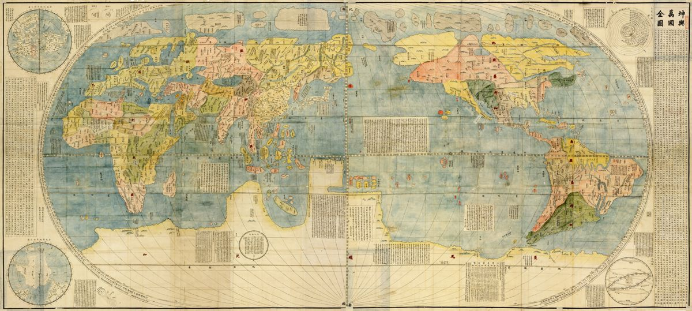
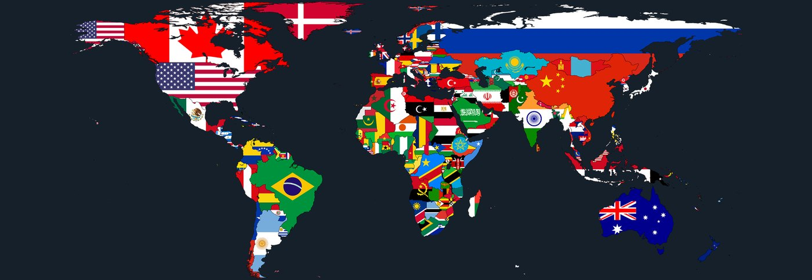
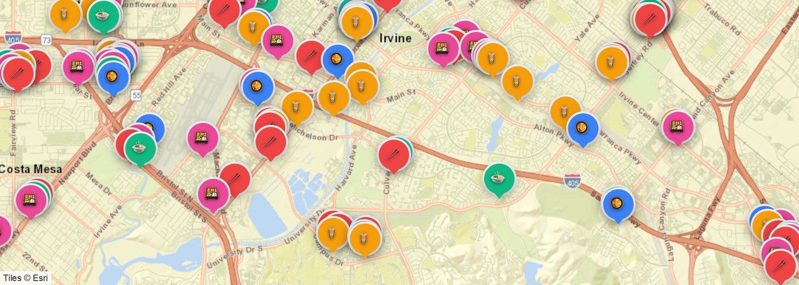
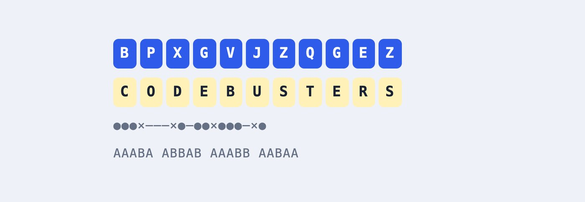
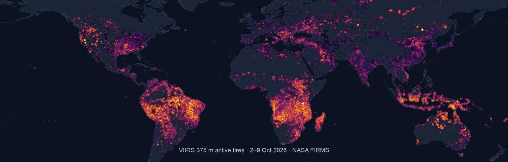
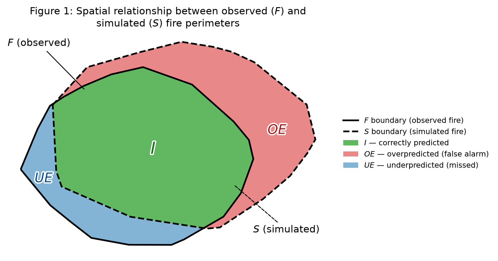

Project Hub ychenzgithub
A curated collection of wildfire satellite tools, spread simulation metrics, deep-zoom historical cartography, GeoGuessr meta guides, and algorithms.
Featured Web Applications
Interactive platforms built with modern web tech, covering deep-zoom cartography, GeoGuessr meta tools, food discovery, and cipher education.

Historical Map Appreciation Platform
An ultra-high-resolution deep-zoom platform for exploring historical maps. Zoom into millimeter-level pyramid tiles of Matteo Ricci's Kunyu Wanguo Quantu (1602) and Martino Martini's Novus Atlas Sinensis (1655), with historical layer annotations for an immersive viewing experience.

GeoGuessr Knowledge Hub & Quick Reference
A global GeoGuessr meta identification guide and review system distilled from real game notes. Covers Street View camera generations, utility poles, bollards, car and antenna meta, and a detailed interactive atlas of countries and regions to help competitive players pinpoint locations fast.

Irvine & Orange County Asian Food Map
An interactive map of 200+ Asian restaurants, boba and dessert shops, and supermarkets across Irvine and nearby Orange County cities (Tustin, Costa Mesa, and more), with category filters and spatial search.

Codebusters Cryptography Training Center
A training platform for Science Olympiad Codebusters (Division B, 2026–27), with tutorials for all 13 cipher types, unlimited practice generators, timed speed drills, and mock tests.
Wildfire & Spatial Computing
Open-source computational toolkits and data pipelines for satellite fire monitoring and spatial spread benchmark metrics.

GFED5NRT · Global Near Real-Time Fire Emissions
Combines VIIRS 375m satellite active fire detections with GFED5 region- and vegetation-specific effective fire area (EFA) and fuel consumption (FC) scalars to automatically generate near real-time global burned area and chemical species emissions on a 0.25° grid.
- Automated daily retrieval of Suomi-NPP / NOAA-20 active fire detections
- Rigorous multi-species emission factor (EF) matrix conversion
- End-to-end cloud sync and global spatiotemporal mapping

FireSpreadIndices · Spread Simulation Benchmark
A Python benchmark library for evaluating the spatial agreement between simulated wildfire spread and observed fire perimeters. Includes overall agreement metrics (IoU, Dice, SDI, ADI, SSIM) and over-/under-prediction decomposition.
- Supports both vector polygons and binary/continuous raster grids
- Complete spatial metrics for fire spread shape and area deviation
- Reproducible Jupyter test workflows and visualizations
All Public Repositories (14)
Explore all scientific packages, interactive web tools, curated knowledge bases, and algorithms.
About the Repositories & Tech Stack
This hub collects public open-source repositories maintained under ychenzgithub, spanning satellite remote sensing, wildfire spread metrics, high-res web cartography, and discrete algorithms.
All interactive web apps are hosted on GitHub Pages or cloud platforms with completely open-source code and data.
Fire Emissions & Remote Sensing
Near real-time burned area, emissions estimation pipelines, and spread simulation benchmark metrics.
Geospatial Big Data & Computing
Google Earth Engine (GEE) architecture, spatiotemporal raster operations, and remote sensing pipelines.
Interactive Maps & Web Tools
Deep-zoom historical cartography, GeoGuessr meta hub, discovery maps, and cryptography tools.